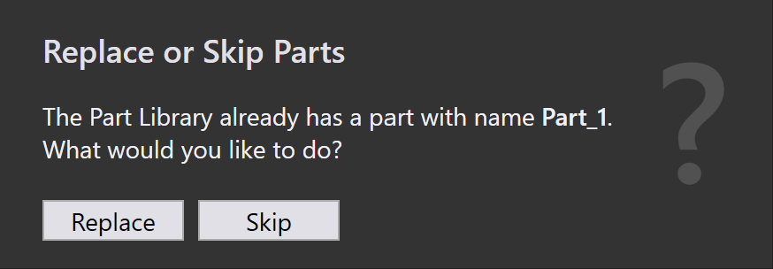

Importer dele
Før De importerer dele, skal De sikre, at filformaterne er kompatible med TruSmartCAM. Se understøttede filformater for mere information.
| Hvis materiale og tykkelse ikke er kortlagt til delen efter import, skal De tildele materiale ved hjælp af delpanelet. |
Importmetoder
Der er tre metoder til at importere dele til delebiblioteket:
-
Importer via fil
-
Træk og slip
-
Overvåg mappe
Importer via fil
En 2D eller 3D delfil kan importeres til delebiblioteket ved hjælp af Importér dele indstillingen.
-
Klik på åbn ikonerne fra kommandolinjen og vælg Importér dele indstillingen.

-
Åbn dialogen vises — vælg en CAD-fil (2D eller 3D).
-
En forhåndsvisning af den valgte CAD-fil vises.

-
Vælg den ønskede del og klik på Åbn.
-
Systemet auto-værktøjer delen for alle tilgængelige maskiner med opdateret værktøjsstatus.
Træk og slip
-
Træk og slip en delfil direkte ind i TruSmartCAM delebiblioteket.
Overvåg mappe
Overvågningsindstillinger giver Dem mulighed for at overvåge en mappe for nye filer og automatisk importere dem til delebiblioteket.
For at konfigurere, se Watch settings siden.
|

Import konfiguration
Brug geometrisammenligning på samme CAD-revision
Når De importerer en del med samme CAD-revision, kan TruSmartCAM sammenligne geometrien af CAD-filen med den eksisterende del.
-
For at aktivere dette skal De konfigurere Revisionsopslagstaster (for eksempel REV) i fabrik → indstillinger →Import/eksport. Aktivér derefter Brug geometrisammenligning på samme CAD-revision indstillingen.

| Geometrisammenligning på samme CAD-revision fungerer kun, når Revisionsopslagstaster er konfigureret. |
-
Importer nu en del til delebiblioteket med en specifik revision (for eksempel Revision 1).

-
Den samme del importeres igen med samme revisionsværdi.
-
TruSmartCAM sammenligner geometrien af den nyligt importerede CAD-fil med den eksisterende del.
-
Hvis der registreres en geometriforskel, viser TruSmartCAM en prompt, der spørger, om De vil:
-
Erstat den eksisterende del med den nye geometri, mens De beholder samme revisions- værdi.
-
Spring over importen og beholde den eksisterende del og dens geometri.

-
Dette giver brugerne mulighed for at opdatere delgeometri uden at ændre revisionsværdien, samtidig med at de bevarer kontrollen over, om eksisterende dele erstattes.
Importerede dele tilføjes automatisk til biblioteket til videre brug. For mere information, se Bibliotek.